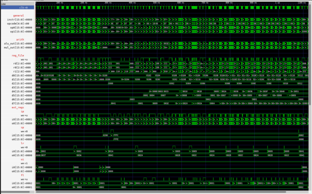
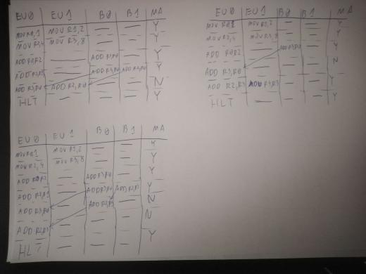
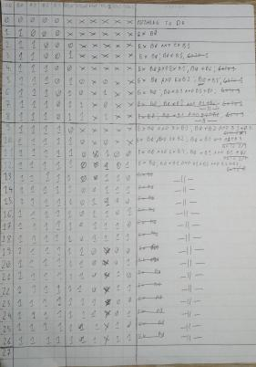
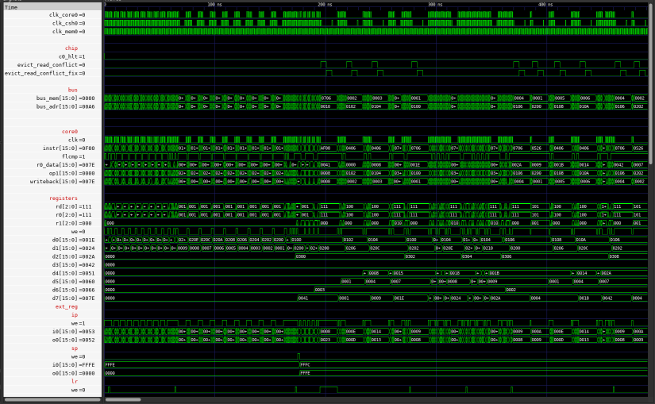
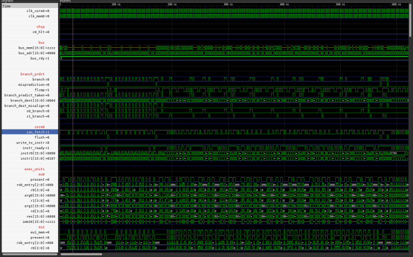

To read about current implementation and skip historical info, the read following sections:
OVERVIEW
ISA
ASSEMBLER
SIMULATOR
TESTS
CHIP DESIGN
CACHE V1
OUT OF ORDER EXECUTION V2
BRANCH PREDICTION
PERFORMANCE EVALUATION
THE GOOD
THE BAD
THE UGLY
There are a lot more features in this one than in previous designs as indicated by length of this page.
There are around 11000 words.
This is RTL simulation only project in VHDL implementing CPU with memory and cache that supports custom ISA and some interesting computer architecture features.
Current CPU is very aggressive in extracting performance from every program by implementing:
Entire project implements also:
Unfortunately the project does not concern itself with memory too much and the main CPU does not interface out of the box with any of the caches.
The entire project went through many iterations and followed me on my path of learning how modern high performance processors work. It pwent much further than I though, it was supposed to be 1 month experimentation with caches and pipeline.
While there still are interesting things that could be done it is much more interesting to work on something that can be executed on real HW.
So this is the last project that focuses exclusively on simulation and there will be nothing new added.
The website still may change if bug in the description or explanation is found, if so there will be note on the main site
Some sections have only high level overview without much interesting details, that is because there was nothing interesting or I do not remember enough
Since this text is so long it is inevitable that some mistakes crawled in.
If there is anything that does not make sense or weirdly phrased, let me know.
In previous designs, opcode was always in the same place, this is convienient but wastes space for reg-reg instructions.
Since r-r instructions require less bits then for them first 5 bits are 00000 and opcode is located at the end.
If the first 5 bits are not 00000 then instruction is r-immediate.
This way 63 different instructions are possible, here opcode place determines only whether second operand is immediate or register.
Registers and immediate are still always in the same spot which makes decoding fairly straightforward.
R-format: 00000BBB CCCDDDDD from MSb to LSb: 5 bits are 0 then 3 bits denote Rd/ccc/Ed then 3 bits denote Rs/Es then 5 bits denote opcode I-format: AAAAABBB IIIIIIII from MSb to LSb 5 bits denote opcode then 3 bits denote Rd/ccc/Ed then 8 bits denote imm8
For example:
- mov R1, R2 is encoded as 00000 001 010 00101
- mov R1, 0xAB is encoded as 00101 001 1010 1011
#progam computing fibonacci number mov R0, 0 mov R1, 1 mov R7, 7 cmp R7, 0 jmp LE end loop: mov R2, R0 mov R0, R1 add R1, R2 sub R7, 1 jmp GE loop end: hlt
#UI usage #R0 = xFF00 wrx UI, 0xFF mov R0, 0x00
Compared to previous design, this time VHDL code was organized and entire thing was split into subcomponents and files.
//Unfortunately more complex implementations still have too much in the main file, im working on improving design skills to fix it
Testbenches were in separate file so it is was no longer necessary to reanalyze them every single time any change was made
As for the design, for reasons unknown to me in the present, component was created for every possible logic gate usage.
For example, AND of 2 3bit vectors was needed so component gate_and2_3bit was created.
Clearly this approach does not scale, it is also completely unneccessary as a & b where a and b are bit vectors is completely valid VHDL.
Similarly decode /*badly named as control*/ component outputs long list of signals and instead of defining custom type, every signal was separately named within processor again.
Each cycle instruction is decoded and everything works almost exactly as it is specified in the ISA, small glue code is needed to make it work.
Overall this is quite straightforward implementation with not many interesting features but there is 1 significant improvement compared to previous VHDL CPU, unified memory was implemented by use of additional cycle_advance control signal.
It is important to note that this project STILL does not concern itself with reality too much.
Even though it is more detailed than HLL behavioral implementation, there is no concern with real gate delay, synthesis and putting it to anything physical. Even Though I tried to use something that at least could synthesise, I had absolutely no expierience in it and so could not make good judgments.
Ommiting description of atrocities mentioned above on a larger scale.
The pipeline is very shallow, it has only 3 stages: fetch/decode - execute/memory - writeback.
Compared to classical RISC pipeline:
Control hazards are dealt with by simply not acknowledging their existence.
As mentioned before, this project does not concern itself with reality so if branch is detected in execute stage then address to fetch is updated, fetch/decode stage then starts fetching from next address and still has time to decode in 1 cycle.
//there is some additional code to deal with cal/ret cases but its nothing noteworthy
//assuming very slow clock and very fast memory, it could work though
The same mechanism used to share memory in simple design is used here to protect from structural hazard.
Whenever memory instruction is detected, pipeline is stalled and currently executing instruction accesses memory.
This is slightly suboptimal as instructions could proceed anyway, it is enough to insert pipeline bubble, but since this is the only possible source of stall, no performance is ever lost because of it.
External registers, despite being a nice idea, are somewhat annoying to implement correctly in all cases.
For example, current instruction might be writing to IP so next instruction is invalid, this requires detecting that instruction is WRX and writes to IP.
Each instruction reading from/writing to external register does so in execute stage /*which kind of makes this stage also writeback*/.
This guarantees that even if next instruction needs that register, it can be forwarded from execute to fetch stage.
There is 1 more problem, self modifying code does not work.
Only the most recent OOE implementation deals with this so all non-simple designs from now on have this problem /*I forgot about it*/.
The cache is 2 way set associative, write through, and write allocate.
It is completely invisible to the CPU and is implemented as subcomponent of memory.
Assuming memory access is 10x as expensive as cache access, entire program 4x as fast as without cache.
Memory delay can be modeled by checking whether data is in cache, if yes then there is short delay, otherwise there is long delay.
//Cache V1 has much more interesting description.

Full Image
Each cycle is denoted by vertical edge (since clock waits for memory in high state).
It is very easy to see loops, when instructions are cached it takes less time to access them as theree is much larger concentration of clock switches.
Delays within loops are caused by some other memory accesses.
This description is not about old implementation but rather current state since it is only a tool used for main project part.
Clearly I do not have a lot of expierience in compiler development and so some design choices are at least suboptimal but it does its job.
As a way to simplify coding, it was necessary to implement macros, it is nowhere near macro system of modern assemblers but it did help write more complicated programs.
First, tokenization is performed for each line.
Tokenizer detects special characters, start and end of various structures, labels, etc.
Then, each token is added to a vector of tokens which is then to be verified and processed.
Initial processing evaluates and expands macros (see Macros), processes attributes (see Attributes), finds labels, and counts instructions.
Then each label is identified and replaced with correct offset.
Labels MUST be referencable before they are created to allow for any useful structures so this part has to be AFTER label identification.
This step also ouputs labels to symbols.txt to allow for easier debugging with simulator.
Then expressions are processed in order (see Expressions).
Each expression is inside {} so it is very easy to find them.
This step also has to be last because expressions can use labels to calculate offset.
For example {array 2 +} to access 2nd entry of array.
Finally, output is created and verified.
This step is really boring and contains no interesting features.
I did not want to bother with implementation of calculator but it was important to have expression evaluation.
Therefore the assembler uses postfix which can be evaluated by walking left to right and popping/pushing data onto/from stack.
For example instead of writing 3 * (4 + 5), one writes 4 5 + 3 *.
All binary operations are implemented (except shift for which divide or multiply can be used).
This feature is a stub, currently supports only ALIGN which inserts NOPs to align code.
Macros can be created with
Example syntax:
@macro bne(x, y, z)
cmp _x, _y
jmp LG, _z
@end
@macro halt
hlt LEG
@end
@def count 10
@macro zero
0
@end
@macro add_one(x)
{_x 1 +}
@end
mov R0, @zero
mov R1, count
loop:
add R0, @add_one(0)
@bne(R0, R1, loop)
@halt
Main limitation is lack of support for nested macro use, due to how they are implemented.
Only single pass is used to implement inital processing so multiline macros have to be defined before they are used.
There is no error for using undefined macros /*yea that is bad*/.
@def macros are very simple to implement by hijacking label system, which also means they do not have to be defined before they are used because labels have additional pass.
//consistency!
Whenever @macro is encountered, it is simultaneously parsed, verified, and added to special vector with macros.
After parameters are parsed, entire body is copied and saved (with small modifications to detect parameters).
Then whenever macro is referenced it is checked for argument count.
Only one macro can have a given name, even though they could be differentiated by different argument count.
If the argument counts match, macro's body is pasted and arguments are inserted, code is later evaluated as if it was written without macros.
One major debugging problem is that line number is lost.
The most important feature of simulator is to test whether particular program is written correctly.
This is possible because simulator is the simplest implementation of ISA and so is trivial to get correct.
Each instruction is simulated according to the ISA and the simulator does not concern itself with details of any particular implementation.
Except for gathering enough data to precisely output cycles taken by simple and pipelined implementation.
With certain options simulator can be used for debugging and detailed performance evaluation.
All options descriptions can be obtained with sim -h.
There are 3 options dedicated for verification:
Warnings verify few features, currently check whether each address is aligned and whether SP is back to 0 at the end.
There are 3 options dedicated to debugging:
While debugging, commands can be used, unfortunately they are stubs of what should be available.
I had loose plans for extending them and thus did not not document them.
Fortunately most of the time what is implemented is enough simply see currently executing instruction and debug programms.
Verbose output allows to see instructions in more detail, eg each arithmetic instruction prints its operands' values and result of operation.
Symbols option uses output from assembler (symbols.txt) which assigns labels to their addresses.
Main use of this feature is to simplify following of JMP and CAL where destination IP gets replaced with name used in program.
There are 4 options dedicated to performance testing:
For any project this size proper testing is a must to make sure implementation is at least somewhat correct.
Tests are grouped based on what they test:
Main purpose of tests is to check tricky scenarios like self modifying code or dependency chain.
As well as big programs which often expose problems not found elsewhere due to their complexity.
Each test has 3 components
Clearly this implementation has major flaw, it requires memory to work which is not given when implementation is new.
Before memory works somewhat /*which is not that long time frame*/ it is enough and not too hard to look at waveform.
Up to this point, lack of multiply instruction caused significant slowdown of EVERYTHING that required multiplication.
For example: with SW multiply factorial takes 156 instructions, but with HW multiply it takes 86 instructions.
Since no one else uses this ISA, it could have been just modified but I decided to go proper route and add proper extension flags. This required introducing some ISA changes but now new features can be added and simply set bit in CPU Feature Flags Register.
This register is readonly external register (writing is possible to encode but has no effect).
Overall, architecture did not improve drastically /*because, well, there is not a lot to improve*/.
Main improvements came in fixing stupidies that arose in first implementation. Control signals were bundled together and useless constants were removed. Logic gate duplication was /*FINALLY*/ removed.
Removed code duplication so now cache became single file that can be easily swapped with RAM and integrated into pretty much any implementation.
Overall architecture did not change /*still wishful thinking and not implementing write buffer*/.
Similar improvements were added to pipeline implementation as to simple one (see Simple Rework).
Pipeline now has 4 stages:
Bubbles (NOPs) can be inserted for 2 reasons:
Branch delay slot is not a solution, it is terrible idea that introduces subtle complexities, see https://devblogs.microsoft.com/oldnewthing/20180416-00/?p=98515.
It exposes microarchitectural details that may not be (and probably are not) relevant later.
MIPS R10000 is an out of order processor that has to support branch delay slot even though it is no longer relevant, quote:
In a pipelined scalar processor, this delay slot instruction can be executed for free, while the target instruction is read from the cache.
This technique improved branch efficiency in early RISC microprocessors.
For a superscalar design, however, it has no performance advantage, but we retained the feature in the R1OOOO for compatibility
Earlier example: R4000 is 8 stage pipeline with branch in 4th stage (counting from 1), but this processor still supports 1 instruction branch delay slot because that is how ISA specified things, even though in this microarchitecture it makes no sense.
Simliar but significantly less annoying problem happened to ARM with its IP.
Essentially at each point IP is IP of that instruction + 2 because of 3 stage pipeline, see https://stackoverflow.com/questions/24091566/why-does-the-arm-pc-register-point-to-the-instruction-after-the-next-one-to-be-e
Aside within aside: despite first MIPS having execute as 3rd stage, branch target is generated in 2nd half of 2nd stage.
Branch condition is checked in 1st half of 3rd stage and i-cache is accessed in 2nd half of 1st stage.
So, in the same cycle, branch is checked and i-cache is accessed using previously generated address.
//I guess that my design is not so unrealistic then.
End of aside within aside.
//note: OOE implementations could really benefit from pipeline but for simplicity it was omitted
In general it is worthwhile to implement something knowing only how that something is supposed to work.
This lets one see why something is done in some way /*and maybe more importantly, why something is not done in some other way*/.
At that time I only knew that OOE CPUs use some kind of buffer and dispatch instructions to execution ports.
Since each instruction takes only 1 cycle I have decided to go superscalar as well.
The main idea is to fetch instructions and if an instruction can be executed, execute it, otherwise put it away into buffer.
This works quite differently than implementations that rely on ROB where instruction is always fetched into buffer first.
The hardware works as follows:
Whenever only 1 currently fetched execution executes, get one from buffer that by this time is free to execute.
Whenever buffer has 2 entries full, fetch 2 instructions from buffer, in case they have dependency on eachother, fetch only first.
Constantly check dependencies on buffered instructions.
I don't remember the exact reason why this approach was scraped, it was because something could not possibly be implemented using buffer and memory at once, unfortunately it is not documented exactly anywhere and the code is long gone.
I definitely want to revisit this idea because it is different than current implementations and sounds interesting.
Important thing to consider is implementation of precise interrupts/exceptions because there is nothing that can invalidate instructions in this mechanism.
Diagram I drew then to show how instructions are moved around (Y means fetch from memory while N indicates that data is to be fetched from buffer only):

Full Image
This time I decided to see how OOE processors work (from very high POV) and I have stumbled upon the term reorder buffer.
To not dwelve into details and spoil the fun I have implemented /*without knowing terminology for it*/ collapsing queue.
The obvious downside, visible on the picture at the end of this section, is HUGE logic that is required to determine dependences.
Dependency checking is also quite complex and has to check for pretty much every ordering constraint.
each possible execution hazard for X and Y: 1. Y writes to register used by X 2. X/Y is HLT 3. X is WRM and Y is WRM/RDM 4. Y is first and Y is RDM/WRM and X is RDM two WRM/RDM instructions cant execute at once case when X is WRM is covered by 3 and 4 5. Y is first and Y is MUL and x is MUL two MUL cant execute at once 6. X/Y is jmp/cal/ret/wrx/rdx this is more restrictive than neccessary however this simplifies circuit significantly and the rdx/wrx are not frequent enough for this restriction to have significant (if any) impact on performance 7. X modifies register and Y is WRM and writes that register//Above snipped is slightly modified comment from the code
The CPU works like follows:
Find up to 2 instructions such that nothing depends on them (check for dep_XonY).
//Obviously always at least 1 instruction can be found, first instruction depends on nothing
Fetch and decode instructions from memory.
Move 1 or 2 instructions from buffer and simulateously insert up to 2 new instructions (decoded in previous cycle). Due to the way it works, startup (and branch misprediction) delay is 2 cycles.
Lack of proper branch prediction and quite high branch misprediction penalty made performance much worse that it could have been.
Some speedup was achieved by starting branch execution while still in buffer but that just reduced the penalty.
It works by checking if first instruction is branch and that branch is T (T is determined by having additional copy of separate early flag register), if so and branch target is known early (uses immediate as destination) then fetch address is changed.
Note that there is no danger with WRX UI because that branch MUST be first in buffer, and really it could also be done without limitation on immediate destination but this way it could be done without extending datapath too much since registers could only be read by execution units.
Fibonacci code got WORSE from 54 to 58 cycles.
Main problem is that there is not a lot of parallelism to exploit and branches are very costly.
After aligning main loop, performance improved from 54 to 45.
Factorial got twice as bad as it was on simple implementation.
Again due to many calls and branches
Matrix multiply (after optimizations) executes in around 0.9 time of simple implementation.
That is abot 400 cycles, compared to 272 max achievable with newest implementation (see Benchmarks).
Highly advanced mechanism used to see what should happen when:
//yes, it is slightly wrong

Full Image
//this is where second period of working on this project starts
//it was quite short
Test framework had been implemented (see Tests) so bugs were easier to spot.
Assembler and simulator (see Assembler see Simulator) were improved mostly around this time period.
This implementation works quite similarly to textbook OOE implementation.
Instructions are fetched to 8 entry ROB which also serves as storage for in-flight data.
If instruction has all dependences satisfied and it is first (or second) that can be executed then it is executed.
If oldest instruction(s) have completed then they are retired.
Up to 2 instructions are fetched, executed, and retired per cycle.
Main problem of previous implementation was very costly depedency check.
In principle ROB and register renaming solve this issue.
My implementation, however, was so terrible that it was undebuggable mess with many edge cases.
It was never fully finished, instead next implementation chose different approach and dep management became trivial.
Code fragment that is responsible for proper dependency forwarding:
rob0_src0 := (2 DOWNTO 0 => instr0_r0, OTHERS => '0') WHEN instr0_cf = '1' ELSE i0_val WHEN RAT(rat00_e).in_rf = '1' AND i0_rd = instr0_r0 AND i0_we = '1' ELSE i1_val WHEN RAT(rat00_e).in_rf = '1' AND i1_rd = instr0_r0 AND i1_we = '1' ELSE instr0_r0v WHEN RAT(rat00_e).in_rf ELSE ROB(to_integer(unsigned(RAT(rat00_e).rob_entry))).src1 WHEN ROB(to_integer(unsigned(RAT(rat00_e).rob_entry))).complete = '1' AND ROB(to_integer(unsigned(RAT(rat00_e).rob_entry))).controls.sro = '1' ELSE ROB(to_integer(unsigned(RAT(rat00_e).rob_entry))).value WHEN ROB(to_integer(unsigned(RAT(rat00_e).rob_entry))).complete = '1' --please forgive me for this monster line, very bad ELSE mul0_res WHEN exe_entry0p = '1' AND ROB(to_integer(unsigned(exe_entry0))).dest = instr0_r0 AND RAT(to_integer(unsigned(instr0_r0))).rob_entry = exe_entry0 AND ROB(to_integer(unsigned(exe_entry0))).controls.mul = '1' ELSE mul1_res WHEN exe_entry1p = '1' AND ROB(to_integer(unsigned(exe_entry1))).dest = instr0_r0 AND RAT(to_integer(unsigned(instr0_r0))).rob_entry = exe_entry1 AND ROB(to_integer(unsigned(exe_entry1))).controls.mul = '1' ELSE alu0_res WHEN exe_entry0p = '1' AND ROB(to_integer(unsigned(exe_entry0))).dest = instr0_r0 AND RAT(to_integer(unsigned(instr0_r0))).rob_entry = exe_entry0 ELSE alu1_res WHEN exe_entry1p = '1' AND ROB(to_integer(unsigned(exe_entry1))).dest = instr0_r0 AND RAT(to_integer(unsigned(instr0_r0))).rob_entry = exe_entry1 ELSE (2 DOWNTO 0 => RAT(rat00_e).rob_entry, OTHERS => '0');//such a mess that it does not fit on the screen!
Slightly different code was for each possible source, there were 4 sources for operations in single cycle.
Details of what, why, and where are not really important, what is important is that this is stupidly complex and could not work well.
//I am certain that it could be done better and work well
//main benefit of tests is that I know that implementation does not work, but that does not mean I have to fix it
//also, vhdl verbosity is first time I have questioned strong typing verbosity
//I have solved it by creating additional signals that are all generated automatically, but still
Simple 2bc branch predictor (and not working RAS) have been implemented here.
There are not many differences between it and current design except current is more robust and not broken so I will not get into details here (see Branch Prediciton).
Despite being broken, some tests passed and so performance could be compared at least somewhat.
Matrix multiply improved from 485 cycles on simple implementation to 276 on OOE implementation.
//I have honestly no clue why it is so fast
//seriously, half working implementation has almost better running time than current one? what happened
//this is where third and final period of working on this project starts
Previous designs were all sort of inserted into CPU, while this time CPU is part of the system.
This provides much better ability to extend it with more memory chips, IO, or multiprocessing.
//At least in principle, didn't happen in practice
This allows all components to work independently of each other knowing only specified protocol.
This goal is much harder to achieve than I thought.
Cache implementations do require modifications to how data is sent to/from memory from/to CPU, especially write back.
Simple and pipeline implementations were rewritten again but there is nothing interesting about that.
Given how the system works, cache must work at least somewhat more realistically.
There are 2 implementations of cache, write-through and write-back.
Both work with simple and pipelined implementation and could work with Out Of Order one, but the problem is that cache operates on 2B chunks and OoO implementation has 4B wide memory.
/*I really did not want to make cache more general at that point.
It was not fully obvious how to make it work for bigger sizes too.
Consider 2B write (as architecture specifies) to 4B memory location (as implementation works).
Should it be written partially? that requires partial hit support.
Should full line be first fetched? that will degrade performance.
Should memory operate in 2B chunks? that will SEVERELY degrade performance.
Much better memory management is something I want to work on since there are many possible places to extract performance */
Waiting for data is implemented by chip stalling clock to a given component.
It could /*maybe should*/ be implemented with each component having internal wait state but it works quite well.
Read:
Write:
Read:
Write:
None of implementation details can be observed by CPU, except by measuring time to satisfy requests.
The cache is write allocate, directly mapped, and has 128 entries, each containing 2B of data.
On read, address is compared against stored tag, if they are equal, data is returned, otherwise miss is asserted.
On write, data is always written and entry is updated accordingly.
the cache is write allocate, 2 way set-associative and has 256 entries, each containing 2B of data.
On read, cache compares data from 2 entries, if hit occured, return data and set LRU to other entry, if there is a read miss, then entry to evict (denoted by LRU) is sent to memory and removed from cache.
After that there is free entry to which data from memory (requested by CPU) is inserted, at the end LRU bit is set to point to OTHER entry.
Writes work exactly like reads except after a miss and potential write to memory data is satisfied from CPU.
Note that read causes at most 2 memory accesses while write causes at most 1.
Obvious and commont optimization is to include dirty bit to evict entry only when necessary, this is indeed implemented.
One problem came up because tests (see Tests) work by dumping memory contents.
In write back cache, by design, memory does not contain most recent copy.
Therefore there is no guarantee /*and indeed I wasted some time debugging code that worked*/ that on halt correct value is dumped.
The solution copies memory content to a buffer (simulation only), then checks cache contents and changes values of that buffer wherever cache contains newer copy.
/*By the way, the vhdl support sucks.
Feature required to implement this check is from VHDL-2008 and (during 2023-12) ghdl did not support it in backend that I was using.
This by no means critizes ghdl, I switched backend and it worked, I have encountered few compiler crashes on the way and they were fixed very quickly.
This issue is with pretty much every tool, almost every recent-ish post on SO talks about VHDL-2008 even though the most recent version is VHDL-2019, support for which was pretty much non existent at the time of writing */
Write through cache waveform is mostly the same as previously.

Full Image
Notice that:
With write back cache, mat mult takes 879 cycles, without 4363 cycles.
In other words, cache provides near 5x speedup.
Out of order 2 way superscalar CPU with internal cache, branch prediction, and instruction elimination.
In this implementation data is not stored in ROB but instead ROB holds pointers to data.
Managing dependences now is as simple as managing Physical Register pointers.
Less data has to be moved each time an operation is to be made, but this is not big concern for simulation.
Entire dependency management now (for one execution port):
FOR i IN 0 TO par_rob_size - 1 LOOP
rob(i).prfs0_p <= '1' WHEN rob(i).present = '1' AND rob(i).prfs0_id = eu0.rd AND eu0.signals.rwr = '1' ELSE UNAFFECTED;
rob(i).prfs1_p <= '1' WHEN rob(i).present = '1' AND rob(i).prfs1_id = eu0.rd AND eu0.signals.rwr = '1' ELSE UNAFFECTED;
END LOOP;
prf_present(to_integer(unsigned(eu0.rd))) <= '1' WHEN eu0.signals.rwr ELSE UNAFFECTED;
Inserting data into ROB is as simple as setting correct PR id and present bit.
To simplify implementation, 1 PR is provided for each ROB entry but this is not necessary.
In fact this is pretty wasteful as it is very unlikely that every instruction writes to register.
For example Intel haswell has 192 entry ROB and 168 entry PRF .
//Haswell has mov elimination which makes it need even less PRs, something I implemented later
PRF is however much less convienient to debug, after all the entire point is that at one point values from 1 AR can be in many PRs.
Since now there is no ARF and it is really useful to check actual values, CPU contains simulation only signals that read current mapping.
These mappings are then shown in waveform in addition to PRF so it is straightforward to see current mapping and check whether something goes wrong.
PR sharing allows reuse of data without copying it to another register.
Each PR has associated counter that keeps track how many instructions point to it.
See Mov Elimination for more details.
just not add it to ROB, it is always correct.
Upper Immediate is absolutely crucial to get fast, as anytime data requires more than 8 bits UI is used.
For example when there are more than 256 instructions, jump dest will require upper immediate.
//Lack of relative jumps is major shortcoming of this ISA
Most of the time wrx UI, imm8 instructions fall into category of ignored ones so they do not need to execute at all.
Whenever second operand is not immediate but register, execution is serialized.
I have not yet encountered single real program use for this instruction.
//It could replace mov R0, R1 ; sll R0, 8 ; orr R0, imm8 with wrx UI, R1 ; mov R0, imm8
//But this is too unlikely to justify higher complexity
There are two cases:
Whenever instructions of the form mov R0, R1 ; op R0, R2 are fetched aligned,
They are internally replaced with op R0, R1, R2.
This mechanism skips mov elimination (see below).
//I am honestly surprised that it worked first time with mov elimination, I thought that it will be major pain
There is no need to consider only alligned instructions but fetch buffer is only 2 instruction wide. Even then, in simulator there are 492 cases of mov R, R, around 150 of which can use this optimization. //Quite significant drawback of 2 address ISA .
Instructions mov Rd, Rs are executed in frontend by the renamer and are NOT sent to any execution units.
This is slightly more tricky than initially appears but most of mechanism revolves around making sure proper registers are allocated/freed.
Especially in superscalar implementation where many instructions can be fetched/retired at once.
Each PR has associated counter that keeps track how many ROB and RAT entries point to it.
Each cycle between 0 and 4 instructions need to allocate/deallocate between 0 and 4 registers.
//It is possible that 4 need to access 1 counter
This is managed by 4 separate adders, nth adder checks how many instructions access nth register.
If many instructions write to the same PR then they are simply redundant, writes are prioritized from 0th to 3rd adder to not write from 2 sources to same destination, even though the result would be the same.
For example, assume that PR0 has to be deallocated and PR0 and PR1 have to be allocated.
Adder0 will see that PR0 has to be deallocated 1 time and allocated 1 so it will not change the value of PR0's counter.
adder1 will see nothing since only 1 PR is deallocated.
Adder2 will see the same thing as adder0 but it result does not matter since adder0 gets priority.
Adder3 will see that PR1 has to be allocated 1 time so it will change the value of PR1's counter by 1 up.
Register Free List operation changes slightly.
Instead of new instruction, allocate and instead of pr overwritten, deallocate.
Whenever value of counter changes FROM 0, register is taken from RFL.
Whenever value of counter changes TO 0, register RFL put back there.
Reference counting makes flushes more expensive since without it, it is enough to restore RFL pointer and commited RAT.
Here, it is necessary to checkpoint state that is also updated on commit (or walk through all instructions in RAT but that is slow).
If that is not then then, before that checkpoint state is used, some instruction may have committed and decremented counter.
Then on checkpoint restore, that counter is bringed back to previous value, overriding mentioned decrement and putting that PR into unfreeable state.
This can be solved by keeping separate counters for deallocate and allocate, checkpointing only allocate.
Instead, since flush can be caused only be retiring instruction, I have decided to simply keep additional commited copy of every PR counter that gets restored on flush.
//Quite expensive but simple and works
//Full ref counting is expensive either way, real CPUs use separate sets for keeping track of ref counted PRs
//and most PRs do not get such set, because there is no need to
Other than that, it is of course necessary to copy RAT mapping
//Most of the stuff just works really, as long as RFL and counters behave properly
Overall the speedup is not as major as I thought it will be.
Simulator despite having 492 mov R, R, gets only 12 cycle speedup (1935 => 1923).
On the other hand, execution ports' utilization dropped significantly:
port0 from 1418 downto 1238 (cycles active),
port1 from 974 downto 874.
And the execution goes fast enough to make 16entry ROB full, increasing the size further does not improve performance.
//Lack of speedup is caused simply by execution resources not being a bottleneck
//small improvement to external register management gained about twice as much
//not described anywhere else because it is boring, simple check whether RDX can be executed cycle earlier
//for this particular test, later improvement in indirect branch handling (see Branch Prediction) improved performance by nearly 500 cycles
//not a typo
//That is why proper measurement and diagnostic framework is so important
Each time a branch is mispredicted or write to instruction occurs or UI value could not be retrieved a flush occurs.
All instructions are removed from the ROB and execution restarts at first known point, that is after instruction that caused flush or branch destination for mispredicted branches.
Flush can only happen because of retiring instruction.
After flush, RAT is restored to commited state and ROB pointers are restored to initial entry.
Note that PRF is NOT changed, there is no need to as architectural state is held by RAT.
There is also no need to restore register free list as it contains only registers that are free to use.
This is (should be) very well tested mechanism without any flaws, because if something is flushed when it should not or not flushed when is should, illusion of sequential execution is broken and all bets are off.
/*
Previous iteration of this webpage contained quite detailed explanation of why something went wrong.
That explanation was somewhat correct but the root issue was different.
It is available on webarchive.
The actual problem was caused by SMC detection too but i honestly have no clue why it broke in that particular way.
In short, the issue was that IP was not properly hashed into bloom filter and this somehow caused instruction to reexecute instead of fetching next one.
*/
This mechanism works but obviously has a flaw that any flush can happen only during retirement, and even more it has to be detectable during retirement.
With current implementation it is fully possible to do so but in general it is not enough and flush (exception) info should be stored within rob entry.
For example, SMC detection can be triggered by any memory write so if memory writes are in any way speculative and executed before retirement then it will not work.
//Writes can be sent to separate write buffer before commitment to memory so early execution is possible.
Much more significant problem is lack of ability to resolve branch before it is retiring, especially for larger ROB.
This requires to do much better management of PRs to be able to unwind translation or store checkpoint state like MIPS R10000 and BOB on skylake.
//How many references to the same paper are too many?
The very annoying yet necessary thing to protect execution against.
Each time an instruction is fetched, its address is stored into bloom filter.
Specifically: entries corresponding to {low 8bits ; high 8bits ; middle 8bits} are all marked with '1', then each time any sort of write is performed, it is checked whether bloom filter contains that particular address, if it does then machine flush is performed and currently problematic instruction reexecutes
Importantly if there IS write to instruction then it IS detected.
Converse is however not true, it is relatively easy to construct addresses that are different but map to the same entry.
For example, with current hashing x0500 and x0050 map to the same entry.
As long as it happens rarely enough, it is fine because of significant space reduction - 64kib (1 bit for each address, for perfect check) is compressed down to 256b.
//This feature does not quite work since flush is specific to that feature instead of reusing branch flush, but due to poor design, branch flush was kinda buggy and not general enough.
Another solution is to have 2 separate bit vectors, each with 256b.
First stores whether high part of address appeared somewhere and second stores whether low part of address appeared somewhere.
This way false positive requires write to high and low part that appeared somewhere but not at once, this is less likely.
Especially because code is usually at x00XX and data is usually stored at higher addresses (either because of stack or simply convienience).
//I have not tested precisely how well it works but it seems to be better.
External cache requires a lot more time to access, even if it is much faster than memory.
Internal cache can be wired independently of memory bus so code being supplied from cache makes memory bus free, so instructions that use memory can do so whenever they need without fighting with processor fetching next instructions.
I-cache is implemented simply as Directly Mapped cache with space for up to 64 instructions (assuming ideal distribution and alignment).
Each time instructions are fetched they are added to that cache.
Since this cache is assumed read only (if that assumption is violated, see below) there is no problem of writethrough/writeback.
Such cache only makes SMC worse (see Self Modifying Code) as not only ROB but all instruction that were ever fetched have to be flushed too.
While it is possible to augment SMC protection such that cache flush is not necessary, it is a lot more bookkeeping and adding things that can go wrong.
Matrix multiply without i-cache takes 321 cycles, with i-cache it takes 313 cycles.
//truly incredible!

Full Image
Main gain comes initially, notice that a bus is often yellow, that indicates it is unused.
//For any multiprocessor design there should be some mechanism to keep memory consistent.
//Memory can be defined to not have to be consistent but that is such boring answer to a problem.
Having to execute memory operations strictly in order needlessly slows down execution, especially for loads.
Main problem comes from long dependency chains where even though load can execute safely it has to wait for previous memory operations.
Additional problem with this particular implementation is when memory operations are in order they have to be executed as first-to-retire.
This slows down retirement as retirement can happen only the following cycle so constant retirement cannot be sustained,
However rob is usually not full and so at some point that 1 cycle loss usually disappears.
Quite simple and effective method utilizing bloom filter similarly to SMC protection (see Self Modifying Code Detection) works like follows:
Execute loads and stores as soon as possible, marking written addresses in bloom filter.
Whenever operation hits in BF then it is quite likely that ordering violation happened, so flush.
Of course this is suboptimal when data is read from memory after being written often, but for compute programs that rarely use memory for data, this is great solution. See Performance below for evaluation.
//Numbers there may be slightly wrong as bloom filter implementation had to be ported from older version of code
//But it shows the potential, especially on memory heavy programs.
A different approach is to keep track of which loads can execute out of order.
To do this, it is necessary to keep track of all memory operations as there may be preceeding store.
There is still speculation as loads are executed out of order and it may happen that this particular address was bogus.
But it is not a problem as in this ISA memory reads do not leave architectural side effects.
When intructions get added into ROB and they use memory they are also added into LSQ.
//This introduces another stall condition - full LSQ - but it is usually not significant.
Write is just added to LSQ but read has to check for dependences.
This is achieved by keeping bit array for each entry, if instruction X depends on Y then Yth entry in X's bit array is 1, otherwise it is 0.
This is not speculative so if Y is store and its address is unknown, X depends on Y.
When store address is known then its dependents are updated and dependence is either kept or removed, depending on address.
Similarly if X is load and its address is unknown, X depends on Y.
if X has no more dependences, it can be executed by execution unit.
//My implementation introduced another execution unit to not have too big slowdown, but it is not strictly necessary
Loads never depend on loads and stores never depend on stores (stores are executed in order anyway due to affecting architectural state).
So memory operation goes through execution like this:
Fetch - insert into ROB - executed by putting address (possibly data) into LSQ - executed by sending to memory.
Small optimization happens for pop and psh since their address is almost always known early.
Whenever SP is modified with wrx, flush occurs since it invalidates speculation on stack.
Internally CPU keeps its own SP that is updated and used in the front end, this allows to fill LSQ entries for stack ops on allocation.
This allows to reduce conservative dependences and for psh and removes the need to be executed twice.
//x86 CPUs do this too and are much smarter, they can handle modifying SP with 1 stack sync uop.
It is possible to separate filling of address and data of store, this may be beneficial for when address is known much earlier, but it may not be that beneficial here because it would make stores much more time consuming, hard to guess, it is not implemented.
//That is what modern x86 CPUs do by splitting stores into 2 uops, 1 for address generation and 1 for data.
LSQ itself can also speculate on dependences like previous approach but flushes only on definite violation.
This is implemented to some degree, each read goes as soon as it can and if it is speculative it just fills its own data field.
If that speculation is succesfull then on load finish memory does not have to be accessed.
If it was incorrect then some write will overwrite data retrieved from memory.
In other words, there is no need to flush. See Performance below for evaluation.
//Actually it is somewhat broken but the potential gain is very small so I did not bother too much with it
Another optimization is store->load forwarding which works by supplying store data to depedent load.
And yet another one is to coalesce reads that access same 4B block since memory supplies entire such chunk.
simulator (in asm):
baseline : 2009 cycles
speculation: 1903 cycles
lsq : 1947 cycles
matrix multiply:
baseline : 313 cycles
speculation: 272 cycles
lsq : 271 cycles
Clearly each method provides speedup over lack of it however it appears that speculation is generally better than LSQ. Massive downside of LSQ implementation is 2 cycles/execution of most memory operations, which is probably the reason why g05t05 benefits more from prediction, but for memory heavy program like matrix multiply, LSQ is slightly better which is great.
For LSQ it seems that store load forwarding, speculation and read coalescing (see above) do not improve performance meaningfully, mostly because there is simply not many occasions when they can be activated.
Coalescing however probably fails because as soon as load gets its address into LSQ then it is usually executed straight away, so there is no way to satisfy more than 1 request at once.
These benchmarks are not lower bound for performance of memory bound programs, eg write cache could be implemented. Essentially, store last N commited writes and forward data from them to reads. For example, 4 entry cache reduced execution time of simulator from 1947 down to 1935 cycles and for mat mult from 271 down to 266.
I do not know the definitive reason why write cache improves performance but SL forwarding does not, my hypotheses is that the execution window is simply too small to see reuse of data.
Bigger ROB should allow for more instructions to be in flight, and thus improve performance because there should be more instructions to extract parallelism from.
Especially with i-cache which should reduce the need to have better memory bandwidth.
It however turned out that after extending ROB from 8 to to 16 entries, performance was worse.
The problem was execution priority.
Arithmetic instructions had higher priority than memory operations (even if memory operation was to-be-retired instruction that blocked retirement).
It is less of a problem with 8 entry ROB where it can cause at most 4 cycles delay (2 execution units, 2 instr/cycle), but with 16 entries there can be twice as large slowdown.
In practice such slowdown is VERY unlikely but smaller one really did happen.
Especially in the larger programs that execute for more time.
(tested on some program, dont remember which)
Originally performance (with i-cache) degraded from 2105 => 2132
After fix, baseline improved to 1980 and bigger rob did not improve perf
//lack of improvement is still annoying but it highly depends on particular program being run
//for matrix multiplication larger ROB makes program run in 0.9 * time of 8entry ROB
/* Identifying these bugs is annoying because my gtkwave setup has only 8 entries of ROB, and with more entries there are MANY waves and it is getting hard to scroll. Also I have almost run out of memory because debugging it requires having 2 gtkwave windows open at once, then tracing each point to identify when bigger ROB gets slower.
This one was particularly annoying because there was no obvious mistake, and indeed there was no direct mistake at all. Particular program tested was g05t05 and exec time rised from 1947 to 1962. Other programs showed similar results on different scales (sometimes none).
As it turns out due to incredibly bad luck, memory operations got scheduled EXACTLY on indirect branch which ALWAYS misses, then in some steady state this code executes over and over again causing this situation to repeat.
//BTB would not really solve the issue here as its very unlikely that same direction repeats in this case
Now the flush has 2 or 3 cycle of penalty depending whether memory bus is currently occupied.
If the bus is occupied then proper address cannot be put on the bus and it is put next cycle.
If the bus is free, then proper address is put right away and next cycle resumes fetching.
So if the performance really was worse because of it then stopping memory from using bus would improve it.
This hypotheses was quickly tested with
FOR i IN 0 TO par_lsq_size - 1 LOOP --checks whether to-be-retired entry is branch IF rob(rob_SE_i(0)).branch THEN EXIT; END IF; [...]and later improved to
FOR i IN 0 TO par_lsq_size - 1 LOOP IF flush THEN EXIT; END IF; [...]Initially performance IMPROVED by 4 cycles even though EVERY branch blocked memory operation. With latter fix, performance is the same regardless of ROB size.
Well working BP is essential for any meaningfull perf gain.
//check for example https://danluu.com/branch-prediction/ to see how many options are there, the list is by no means exhaustive
Determining best BP to use is quite complicated problem and my use of small programs does not fully address complexities.
Simulator implementes few branch predictors but they occupy most of the code and drastically reduce readability (see Simulator).
/*
Also I am fairly sure that tournament predictor is broken but I ever debuged it. Debugging BP is tricky since properly implemented BP is always correct in a sense that, even if it has 0% accuraccy then it can never cause wrong execution.
AFAIK debugging it is either single stepping it to make sure it works as intended or generate some test that should perform with certain accuraccy.
*/
Out of the ones implemented, usually 2BP start T performs the best, therefore that is what what CPU implements for branch prediction.
Although with quicksort before optimizations, 2bc history performed better.
//Current framework also has the problem that all history predictors have same history length, but global history requires more bits to operate as good as local history, that is, more per history register but in total it requires less.
CALs and RETs are always predict taken and operate using RAS. This prediction scheme makes fast LR not necessary as it is implemented using microarchitecture feature.
Typically that is all, CALs and RETs are always taken so there is no problem, however this ISA allows them to be executed conditionally, this comes mostly from how easy it was to encode it.
//In retrospect, it may have been smarter to use extra bits for greater address range and provide separate conditional relative jump
As long as not taken path is very rare then it is fine to use it, for anything else this is bad for performance, unconditional JMPs, CALs and RETs are always predict taken.
Indirect branches require knowing the address early enough, the CPU just waits until that address is available and when it is, it knowns where to jump.
This introduced massive speedup for g05t05.asm which improved by almost 200c, with improved code it is possible to reduce that even further, in total reducing execution time from 1923 to 1441 cycles.
Improved code means more time between when destination is availabe and actual jump.
//I am genuinely shocked by how much it gains, maybe it unlocked full potential of earlier optimizations?
//in real processors need for BTB comes mostly from the fact that branch target is not known early enough
Verification happens at retire when branch direction is compared against flag register (also updated at retire), if the branch direction does not agree, flush is performed.
One exception being, when branch is correctly predicted it can be retired while being second-to-retire, not first.
//specific conditions are not interesting, they just make sure nothing breaks
After misprediction is detected, Register Allocation Table is restored to its commited state, then execution begins from last known instructions (see Flush Mechanism).
Such recovery is fine for small ROB but for more agressive CPUs with 100s of ROB entries this is terrible approach.
MIPS R10000 implements 4 such "commit" states, so up to 4 branches can be in flight at once, then if misprediction is detected state of machine is restored to corresponding branch's "commit" state. //there is also approach of unwinding register mappings but, honestly, I do not know how that works in detail.
After all, particular program /*I really shouldve written what is what back then*/ originally had 256 misses and took 1562 cycles. With 2BC branch predictor it has 3 misses and takes 1055 cycles.
//as a performance freak, it is THE MOST satisfying part of entire project
Despite what simulator provides, it is inconvienient to try to replicate implementations, especially complex ones, in another simulator.
//That said, simulator in c++ runs significantly faster than implementation in vhdl so replication is not a bad idea
Therefore CPU has some counters to check how many cycles there were with specific event.
This is very useful to identify bottlenecks and find what potentially could be optimized.
Current list:
quicksort:
instructions: 1437
simple : 1809 cycles
OOE : 1272 cycles
IPC : 1.13
OOE/simple : 0.70
instructions: 322
simple : 437 cycles
OOE : 250 cycles
IPC : 1.29
OOE/simple : 0.57
instructions: 2332
simple : 2662 cycles
OOE : 1570 cycles
IPC : 1.49
OOE/simple : 0.59
After slight source code modifications, simulator can be run at 1441 cycles making at run at ~0.54 time of simple one with IPC ~ 1.62.
One problem with benchmarks is that it is usually not possible to make same program run well on all implementations.
For example, additional alignment is potentially very useful for OOE as it may make branches effectively free while simple will be punished by additional NOPs to execute.
The absolute best thing is, the speedup is very high, nearly 2x.
Many mechanisms are very reliable and have not failed even once after initial implementation. Mostly: dependency management, execution units, PR reference counting, branch verification.
I learned a lot about how features really work and not just high level overview.
The only major flaw is the project organization which really, really sucks.
It improved somewhat but most features are in the single file, most cannot be turned off (though not all) and debugged on their own.
Performance extraction is somewhat fragile and it is hard to reason why something breaks.
Significant portion of this comes from how sensitive fetch is to alignment.
Some mechanisms are ugly and barely work and I do not trust them.
I do not want to add more tests to discover bugs caused by them and spend any more time with them
There should be many more tests but the simulation time is so slow.
So tests should be split into 2 groups: all tests and often failing tests.
{kind=link}
{kind=link}
{kind=link}
{kind=link}
{kind=link}